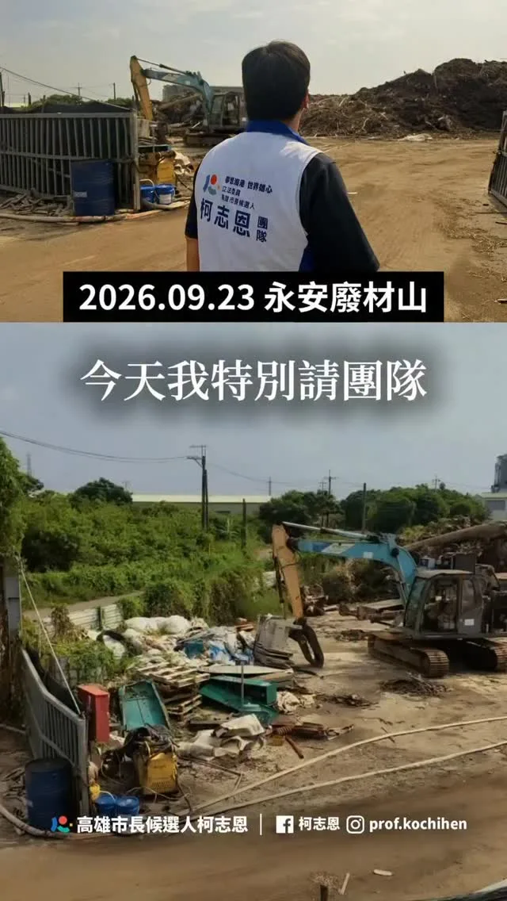
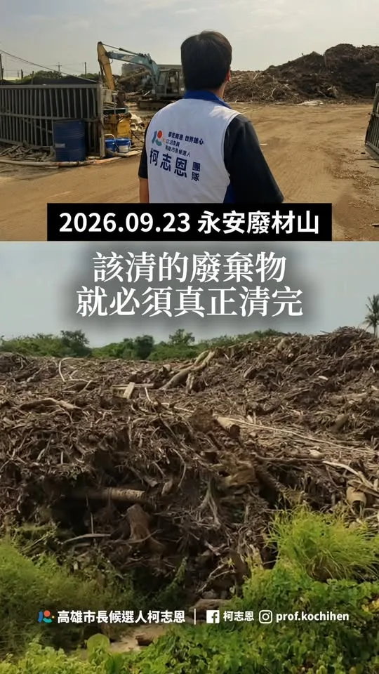
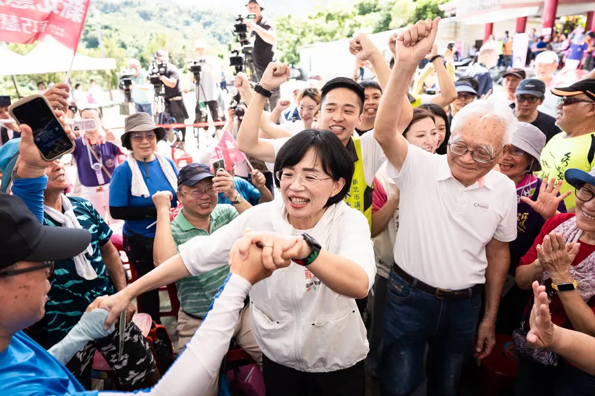
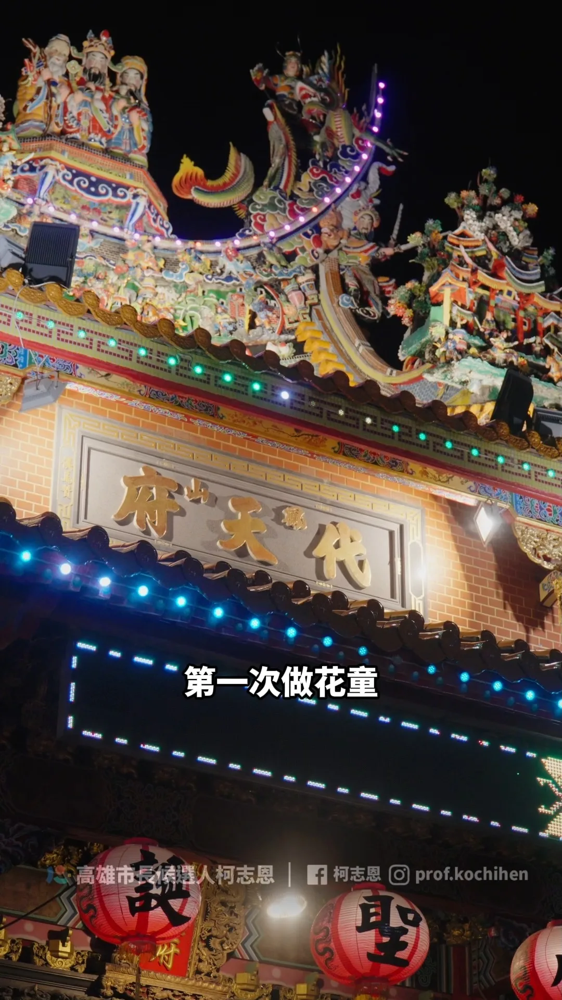
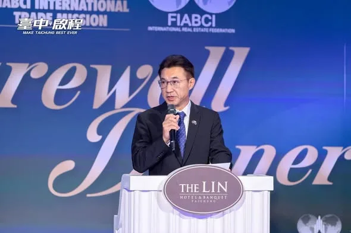
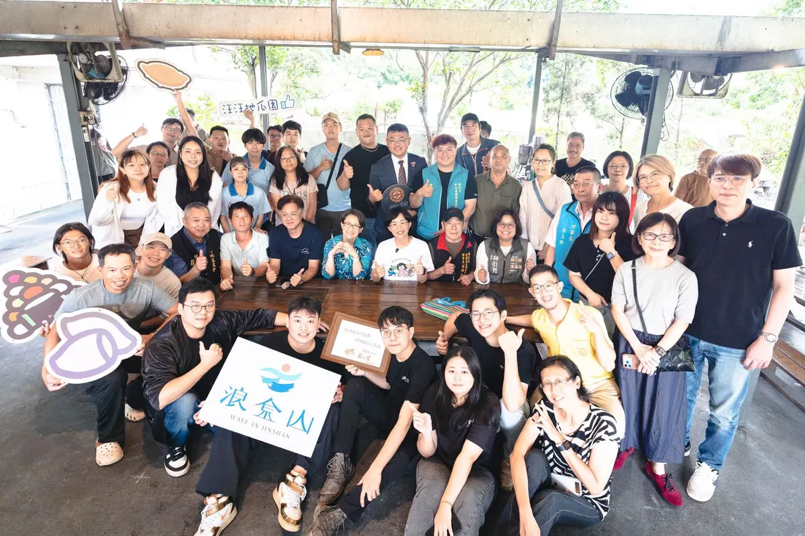

@prof.kochihen:土地，是高雄人的家，不是隨意傾倒廢棄物的地方。 9月14日，我的團隊接到網路陳情，反映永安一處農地疑似遭大量堆置廢棄物。 隔天，我和許采蓁議員的團隊立即到場勘查，沒想到眼前景象令人觸目驚心，近1800坪的農地，堆滿廢土、廢木材，堆置量約1.5萬立方公尺，換算起來，足足可以填滿6座奧運標準游泳池。 周邊還是一片綠油油的稻田，原本的良田，卻成了一座廢棄物山。
Posts

@prof.kochihen:土地，是高雄人的家，不是隨意傾倒廢棄物的地方。 9月14日，我的團隊接到網路陳情，反映永安一處農地疑似遭大量堆置廢棄物。 隔天，我和許采蓁議員的團隊立即到場勘查，沒想到眼前景象令人觸目驚心，近1800坪的農地，堆滿廢土、廢木材，堆置量約1.5萬立方公尺，換算起來，足足可以填滿6座奧運標準游泳池。 周邊還是一片綠油油的稻田，原本的良田，卻成了一座廢棄物山。
@prof.kochihen:世界無車日，是重新思考城市交通的關鍵時機。 除了持續提升低碳運輸的品質與使用率，更要從市民每天的生活需求出發，讓步行、騎自行車、大眾運輸與汽機車，都能有更完善的交通環境，打造安全、便利、舒適的高雄。 五大政策，打造高雄友善交通新生活。

@zenolai:戰貓、隆貓合體！不談別的，先擼貓🐈 邀請 @bikhimhsiao 副總統來到高雄，當然不能錯過貓奴行程。 「勘熟所」是寵物友善餐廳，同時也是收容與送養的愛心中途之家。老闆娘Shiny投入動物救援已經16年，也和我們分享黑貓「洁洁」、虎斑貓「宅宅」從救援、醫療、照護、社會化到等待認養的故事。 才進到店裡坐下，美琴副總統就立刻聊起貓，從家裡4隻貓的個性，一路聊到過去救援毛孩的故事，其中一隻就是大家都很熟悉的「蔡想想」。 每一隻被接住的毛孩背後，都有很多人的時間、心力與付出。因此，我提出「人寵共好的高雄：毛孩四個寶」，未來要增加寵物友善公園與活動空間、建立友善商家與毛經濟產業圈、擴大生命教育與責任飼養，也要持續強化中途照護、源頭管理與動保量能。 毛孩早已是許多家庭重要的一份子。一座城市如何對待動物，也反映了這座城市如何看待生命。希望未來的高雄，讓毛孩有人疼、中途有人挺、飼主有更友善的環境，讓每一個生命都能被好好接住。


@su.chiaohui:學客語也可以這麼有趣！一起「玩中學、學中玩」 我和鄭麗君副院長、古秀妃主委一起來到「大FUN凱道」，走進客委會主辦的「客庄市場」，與孩子們一起學客語、認識客家食材。透過生活中吃的文化開始學習，讓孩子發現原來認識客家文化可以這麼好玩！ 我們也到各攤位和大家一起逛二手市集、玩泡泡、體驗地板滾球，現場還有環境永續、兒本交通等豐富的親子活動，讓孩子從遊戲中認識不同議題。


今天再一次回到高雄，跟 柯志恩 委員、蔣萬安市長站在同一個台上。 說實在，我的感動、我的感慨，可能比大家都還多。 我希望，讓做事的人改變城市，也改變選舉文化。 高雄對我來說並不陌生。那一段時間，我在這裡當副市長，跟大家一起打拚。每一條路、每一項工程，我到現在都還記得。 那時候我們做的，就是「路平、燈亮、水溝通」。很多人說，那是里長的事。 說實在，市民需要的事，沒有一件是小事。 因為路不平，騎車出去馬上有感覺。燈不亮，晚上回家就不安心。水溝不通，一下雨就積淹水。 最近志恩很關心後勁溪。說到後勁溪，我特別有感覺。 以前後勁溪下游溪寬變窄。後來跟台塑協調用地，讓河道重新整治。這次下大雨，雖然還是有一點危險，但沒溢出。 路平燈亮水溝通，是基礎；「夢想海港、世界雄心」，是願景。 高雄現在面對的是世界的競爭。志恩有國際觀，也有教育專業，她知道下一代需要什麼。所以我要拜託高雄鄉親，給柯志恩一個機會，好好建設高雄！ 最後講到今年的選舉，說實在，我有很多感慨。 選舉不是抹黑。有人在抹黑，我們應該共同來譴責。 所以能改變這個狀況的，只有鄉親手上的那一票。 11 月 28 日，請大家支持我接棒新北市長，支持萬安市長連任，支持柯志恩當選高雄市長。 這一票，投給做事的人，也投給一個不一樣的選舉。


今天的 #鳳山 ，讓我再次看見高雄改變的力量！ 八年前，我和 #蔣萬安 一起站在鳳山，見證高雄的改變；八年後，我們再次站在這裡，看見的依然是人民期待更好未來的眼神。 謝謝 台灣公道伯 王金平 院長、蔣萬安 市長、李四川Hammer Lee 市長候選人，以及所有議員、里長和鄉親朋友到場相挺。 王院長說，八十多歲了，為什麼還願意再度「撩落去」？因為他掛念高雄的未來，掛念年輕人的機會，也掛念下一代要生活在什麼樣的城市。 李四川、川伯說，市政沒有小事，路平、燈亮、水溝通，看起來平凡，卻是人民每天最真實的感受。下雨能不能安心睡覺、長輩出門方不方便、孩子回家路安不安全，都是市長該放在心上的事。 蔣萬安市長則提到，時間最能驗證政治人物的承諾，四年前我答應大家留在高雄，這些年我沒有離開。我走遍38個行政區，從山區到海邊，從農村到市區，一步一步認識這座城市，也更了解高雄人的期待。 高雄這些年有進步，我們願意肯定；但高雄的下一步，不能只滿足於現在。 孩子為什麼還是北漂？ 薪資為什麼追不上房價？ 科技產業來了，傳統產業怎麼升級？空氣、水質、工安、職安，以及城鄉資源分配，還有多少問題等待解決？ 高雄是一輛性能優異的跑車，但如果永遠停留在同一個檔位，就無法跑向更遠的未來。 所以我提出13579政見，高雄未來最優先的方向：薪水漲上去，把人留下來；環境更美好，高雄拚世界。 讓產業升級，讓青年看見機會；讓經濟發展，也讓空氣更好、水質更好；讓高雄不只是被世界看見，更能走向世界。 今天站在台上的，一位是工程師、一位是律師，而我是老師。我們來自不同領域，但有共同信念，讓專業回歸市政，把人民放在第一位。 高雄不屬於任何政黨，高雄屬於所有高雄人。這場選舉，不只是選一位市長，更是在決定高雄下一個階段要往哪裡走。 我們一起站在這裡祈求一個可以服務鄉里的機會，不要製造世代對立，也懇請大家支持我們所有議員和里長，我們絕對全心以高雄為榮，讓全台灣、全世界看到高雄。 鳳山吹起的風，我相信會吹向整個高雄，讓我們的勝選政黨輪替、再創奇蹟。 #高雄 #翻轉高雄 #再創奇蹟 #更好的未來

@prof.kochihen:謝謝鳳山鄉親一路給我的力量。 四年前，我在鳳山承諾「長住高雄」；四年後，我帶著更成熟的準備，再次站在大家面前。 鳳山對我來說，是很特別的地方。從2018年第一次站上萬人造勢舞台，到四年前人潮滿滿的廟口開講，這裡有太多難忘的回憶，也有許多一路陪伴我的鄉親。 走遍38區、傾聽地方聲音，從淹水、環境、交通、公共建設，到青年居住、長輩照顧，鄉親的每一份心聲，都是我繼續打拚的理由。 我一定會努力，讓高雄更好！ 明天，我們再次相約鳳山，凝聚我們的力量，讓大風吹起。 📣 9/19（六）#大風起 鳳山大造勢 📍捷運鳳山西站旁｜2號出口 ⏰15:00入場｜15:30正式開始 919鳳山大造勢，明天見！

@prof.kochihen:鼓山是我的家、高雄是我的家；我想和鄉親作伙實現夢想的未來！ 上週來到 #內惟青雲宮，看著熟悉的里長們、熱情的鄉親們，心裡特別有感，四年前選舉結束後，我曾對自己許下一個承諾：留在高雄，繼續打拚，所以，我把家安在鼓山。 我是鼓山的居民。我喜歡這裡的歷史底蘊，喜歡西子灣、哈瑪星的人文風景，也看見農16、美術館特區帶來的城市轉型。鼓山是高雄最耀眼的門面之一，但我也知道，豪雨一來，鼓山三路泥水漫流；颱風一來，居民擔心淹水、擔心停電。這些問題存在很多年了，市民要的其實不多，就是一個安心生活的環境。 市政最重要的是基本功。治水要做好源頭截流、泥水分流；該推動的電線地下化要加快腳步；讓鄉親不用每逢風雨就提心吊膽。因為政府最基本的責任，就是保護人民免於恐懼。


很多人不知道，楠西，是全台最漂亮的螢火蟲棲地之一。 每年4-5月，夜晚的森林裡，會有幾百隻螢火蟲同時亮起來～就像走進星空。 我的這張照片，是那片森林的一角。 台灣的螢火蟲，是環境的指標動物。 一片山，如果農藥太多、光害太強、水源被污染，螢火蟲就會消失。 楠西的螢火蟲還在，代表～那片山，還被人好好照顧著。 楠西的螢火蟲，是台南留下來的一片珍寶。 亭妃想做的事之一，就是，讓牠們一直亮下去。 （每年4-5月，如果你有機會來楠西，記得晚上留下來，牠們等你 40 年了。）

今天從中壢華勛市場到八德公有市場，走進大家每天採買、吃早餐、話家常的地方，也聽見許多最貼近生活的聲音！ 一早來到華勛市場，沿路和攤商、買菜的鄉親打招呼，收到好多特別的祝福。有人送來鳳梨、粽子、蒜頭，還有可愛的蒜頭吊飾，甚至有支持者特別帶著「杰伴童行」貼紙來合照，大家的熱情讓一早的掃街行程活力滿滿🫶🏻 接著來到八德公有市場，感受市場與周邊居民緊密相連的生活日常。收到鄉親送來蘿蔔和竹筍祝福，結束後我們到在地超過30年的「50巷麵店」，邊吃麵邊聊地方事，來場最在地的早餐聚會。遇到很多市民朋友，大家都是巷仔內的！ 中壢、八德快速發展，人口持續移入，交通問題是居民的日常，捷運建設要如期如質、資訊公開透明，未來我也要把周邊道路、大眾運輸路網規劃好，讓建設真正接上市民每天的生活。大家關心的垃圾費隨袋徵收，在取得充分共識前，我也承諾停止推動。 感謝張曉昀議員 @vina.lovezhongli 、魏筠議員 @weiyunin 、彭俊豪議員 @c_peng 、黃崇真議員 @cchuang_0223 ，八德許家睿議員 @cjcheerup 、市議員呂林小鳳議員 @siaofonglin 、蔡永芳 議員候選人服務團隊 @tw33462 、福興里姚成達里長、瑞豐里呂學琪里長，以及八德公有零售市場自治會邱秋珍會長一起同行。 心中壢、心八德，杰伴動起來💖

土地，是高雄人的家，不是隨意傾倒廢棄物的地方。 9月14日，我的團隊接到網路陳情，反映永安一處農地疑似遭大量堆置廢棄物。隔天，我和許采蓁議員的團隊立即到場勘查，沒想到眼前景象令人觸目驚心，近1800坪的農地，堆滿廢土、廢木材，堆置量約1.5萬立方公尺，換算起來，足足可以填滿6座奧運標準游泳池。周邊還是一片綠油油的稻田，原本的良田，卻成了一座廢棄物山。 今天，許采蓁議員也在市議會質詢揭發這起案件。市府表示早在去年12月就已經發現相關情況，今年年初也已將業者移送檢調，7月底要求提出清理計畫，卻要等到今年底才能完成清除。但該地在今年8月甚至還曾經發生火災燃燒。 我要問的是，既然去年就已經掌握，為什麼問題還能一路拖到今年？為什麼在已經發現、已經列管、甚至移送檢調之後，現場仍然持續堆置，甚至還發生火災？ 今天團隊再到現場查看，廢木材依然大量堆置、露天曝曬。這也正是我認為高雄現在最需要檢討的地方。不能每次都是等到事情發生、等到地方民眾陳情、等到民代調查，甚至引發大家關注之後，才開始處理。 美濃大峽谷、小港柏油山、燕巢垃圾山、田寮垃圾山，再到今天的永安廢材山。一塊又一塊土地被破壞，難道都要等到地方民眾陳情、民代調查，甚至引發大家關注之後，才開始處理？令人無法接受。 高雄要發展，但發展不能建立在犧牲土地與環境的代價上。高雄人的家園，不能任由廢棄物一座座堆起來。土地只有一塊，破壞了就很難恢復。我們不能再讓「發現一處、處理一處」成為常態，更不能只停留在事後查處。 真正要做的是把事前防範做好，強化監測、巡查、稽查與跨局處通報，對於已經列管的案件，也不能只是開單、移送之後就放著，而是要持續追蹤到真正改善為止。 未來如果我承擔市長的責任，我會要求相關局處加強查緝與後續追蹤，建立更完整的預警與巡查機制，在問題還沒有擴大以前，就先發現、先處理。該追查的要追查，該清除的要立即清除，更要把監測、稽查和責任追究真正做起來。 高雄的土地，不能再這樣被糟蹋。 無論他們掛上多少抹黑的看板，我們都不會被轉移焦點，該追查的責任，我們一定追到底。未來我也不會讓這樣的事情，一再發生。

#世界無車日，是重新思考城市交通的關鍵時機。 除了持續提升低碳運輸的品質與使用率，更要從市民每天的生活需求出發，讓步行、騎自行車、大眾運輸與汽機車，都能有更完善的交通環境，打造安全、便利、舒適的高雄。 #五大政策，打造高雄友善交通新生活。 一、落實人本交通，把好走的路還給行人 下了車，大家都是行人。 目標在2030年，將都市計畫區內12米道路的人行道覆蓋率提升至65%。讓城市裡的長輩、孩子，以及推著嬰兒車的父母，都能安心行走。 二、推動安心通學，守護每一個孩子的上學路 推動「安心通學圈」，以校園周邊為核心，全面改善學童通學路線，並逐步將範圍延伸到社區，打造15分鐘步行生活圈，讓孩子安全上學，也讓家長更加放心。 三、打造友善步行環境，讓城市更舒適 1. 推動「八年百萬植樹計畫」，全面檢視全市樹種，以原生樹種為核心，增加具韌性的行道樹，讓更多道路擁有綠蔭，也降低颱風造成樹木倒塌的風險。 2. 打造「城市風廊」，透過都市規劃將基地通風率納入都市更新獎勵，讓都市水系與綠蔭相互串聯，形成自然通風廊道，降低熱島效應。 3. 推動「連續型遮蔭步道」，善用騎樓、建築物內縮、穿堂、智慧型遮陽傘及連續遮廊等方式增加行人遮蔭，參考新加坡、韓國等城市經驗，讓市民擁有更舒適的步行環境。同時善用透水鋪面、路樹養護等方式更新人行道，減少積水並降低交通噪音。 四、大眾運輸使用更安心，提升候車與轉乘品質 改善公車候車區與照明系統，逐步建置公車等候區緊急服務鈴，並與轄區派出所連線，提升候車環境的安全與便利，讓市民搭乘大眾運輸更加安心。 五、高雄「雄好騎」，打造更完整的自行車生活圈 1. 推動YouBike前30分鐘免費，鼓勵短程通勤、觀光騎乘與低碳代步。 2. 推動「銀髮樂騎計畫」，開放敬老卡扣點使用YouBike與電輔車，建立「敬老卡加傷害險」一站式開通機制，降低長輩使用門檻。 3. 升級自行車道與站點，串接捷運、輕軌沿線，以及商圈、住宅區與觀光景點，增設保護型自行車道，並將YouBike站點擴增至1,800站。 4. 導入AI與大數據改善車輛調度、維修效率與站點配置，將低使用率站點移往需求熱區，補足公車轉乘最後一哩路。 5. 推動自行車上輕軌，先於離峰時段試辦一般自行車上輕軌，強化自行車與大眾運輸的轉乘便利性。 一座好的城市，交通不只是通行，更與每一個人的日常生活息息相關。 從步行、騎車到搭乘大眾運輸，我們要讓每一種交通方式都更加安全、便利、舒適，也讓不同年齡、不同需求的市民，都能享有更好的城市生活。 世界無車日，讓我們一起打造更友善、更宜居、更有活力的高雄。

戰貓、隆貓合體！不談別的，先擼貓🐈 邀請 蕭美琴 Bi-khim Hsiao 副總統來到高雄，當然不能錯過貓奴行程。 「勘熟所」是寵物友善餐廳，同時也是收容與送養的愛心中途之家。老闆娘Shiny投入動物救援已經16年，也和我們分享黑貓「洁洁」、虎斑貓「宅宅」從救援、醫療、照護、社會化到等待認養的故事。 才進到店裡坐下，美琴副總統就立刻聊起貓，從家裡4隻貓的個性，一路聊到過去救援毛孩的故事，其中一隻就是大家都很熟悉的「蔡想想」。 每一隻被接住的毛孩背後，都有很多人的時間、心力與付出。因此，我提出「人寵共好的高雄：毛孩四個寶」，未來要增加寵物友善公園與活動空間、建立友善商家與毛經濟產業圈、擴大生命教育與責任飼養，也要持續強化中途照護、源頭管理與動保量能。 毛孩早已是許多家庭重要的一份子。一座城市如何對待動物，也反映了這座城市如何看待生命。希望未來的高雄，讓毛孩有人疼、中途有人挺、飼主有更友善的環境，讓每一個生命都能被好好接住。 戰貓＋隆貓，合體成功！🐈🐈⬛ 登真-邱議瑩 黃彥毓 前鎮小港 我願意 鄭光峰 高雄市議員 黃敬雅 Huang Ching-Ya 吳昱鋒-科技先鋒

學客語也可以這麼有趣！一起「玩中學、學中玩」 我和 鄭麗君 副院長、#古秀妃 主委一起來到 #大FUN凱道，走進客委會主辦的「客庄市場」，與孩子們一起學客語、認識客家食材。透過生活中吃的文化開始學習，讓孩子發現原來認識客家文化可以這麼好玩！ 我們也到各攤位和大家一起逛二手市集、玩泡泡、體驗地板滾球，現場還有環境永續、兒本交通等豐富的親子活動，讓孩子從遊戲中認識不同議題。 我一直認為，文化傳承最好的方式，就是讓孩子從生活中自然接觸、願意開口，慢慢認識自己的語言與文化，才能一代一代傳承下去。 所以未來在新北，我會持續推廣客語教育、挹注更多資源支持客家文史團體及社團，更要打造「新北AI客語學習平台」，讓客語更貼近生活，讓更多孩子願意學、喜歡說，希望每一位客家子女都能多認識自己的文化、以自己的文化為榮。

@prof.kochihen:高雄就像一台跑車，如果永遠打在同一檔，無法超越，唯有換檔、換駕駛，我們才有辦法駛出全世界。 柯志恩今天在這裡，除了已經提出「13579」願景，我還要提出高雄四個優先： 第一個就是「薪水漲起來」 第二個就是「讓人留下來」 第三個「環境好起來」 最後就是「高雄拚世界（sè-kài）」！ 高雄有許多非常棒的產業，有農業、漁業、螺絲、扣件，真正要推銷出去，我們一定要讓世界認證，讓大家的薪水更好。 我們人才有那麼多，不管是科技人才、高雄子弟要留在高雄；還有觀光客，把觀光做好、把人留下來！

#美濃 ，我回來了！ 四年前，美濃是原鄉之外，唯一讓我勝選的地方。那時候我在 #天后宮 向天上聖母、向鄉親承諾：我要留下來。 四年後，我再次站在這裡，我可以很驕傲地說：我留下來了，而且我沒有忘記當初的承諾！ 我是屏東鄉下長大的孩子，小學五年級時，爸爸就常帶我來美濃。他告訴我，美濃是最重視 #教育 的地方。後來很多學生也來美濃當老師，這裡的忠義精神，一直讓我印象深刻。 所以去年揭露 #美濃大峽谷 ，不是因為我不愛美濃，正是因為我太捨不得。美濃的好山好水，不能被「大峽谷」這個名字給埋沒。 同樣的，美濃的淹水問題也不能再拖。強化美濃溪、東門排水、福安排水等防洪系統，並持續改善路基穩定性與排水系統。同時，透過系統性的河川整治、橋墩設施改善，該做的治水、疏浚，就應該一項一項做好。 我要照顧好美濃的長輩，給年輕人舞台，讓孩子有競爭力，更要把美濃的客家文化推向全台灣、推向全世界！ 今晚特別感謝新竹縣長 楊文科 南下相挺，楊縣長提到，美濃是 #客家 文化的重要重鎮，也是人才輩出的地方，這裡重視教育、崇尚忠義，擁有「硬頸」打拚、不向困難低頭的客家精神。也感謝我的好姐妹、美濃的女兒 朱海君 Angel 一如既往的動人、漂亮到場獻唱。 讓我們一起掀起高雄的大風，重現高雄的奇蹟！ 感謝 高雄市議員林義迪 及參選人 李振豪 及里長、仕紳貴賓好朋友們。

謝謝鳳山鄉親一路給我的力量。 四年前，我在鳳山承諾「長住高雄」；四年後，我帶著更成熟的準備，再次站在大家面前。 鳳山對我來說，是很特別的地方。從2018年第一次站上萬人造勢舞台，到四年前人潮滿滿的廟口開講，這裡有太多難忘的回憶，也有許多一路陪伴我的鄉親。 走遍38區、傾聽地方聲音，從淹水、環境、交通、公共建設，到青年居住、長輩照顧，鄉親的每一份心聲，都是我繼續打拚的理由。 我一定會努力，讓高雄更好！ 明天，我們再次相約鳳山，凝聚我們的力量，讓大風吹起。 📣 9/19（六）#大風起 鳳山大造勢 📍捷運鳳山西站旁｜2號出口 ⏰15:00入場｜15:30正式開始 919鳳山大造勢，明天見！


設置吸菸室，日本的經驗是什麼？日本還考慮不同需求？

鼓山是我的家、高雄是我的家；我想和鄉親作伙實現夢想的未來！ 上週來到 #內惟青雲宮，看著熟悉的里長們、熱情的鄉親們，心裡特別有感，四年前選舉結束後，我曾對自己許下一個承諾：留在高雄，繼續打拚，所以，我把家安在鼓山。 我是鼓山的居民。我喜歡這裡的歷史底蘊，喜歡西子灣、哈瑪星的人文風景，也看見農16、美術館特區帶來的城市轉型。鼓山是高雄最耀眼的門面之一，但我也知道，豪雨一來，鼓山三路泥水漫流；颱風一來，居民擔心淹水、擔心停電。這些問題存在很多年了，市民要的其實不多，就是一個安心生活的環境。 市政最重要的是基本功。治水要做好源頭截流、泥水分流；該推動的電線地下化要加快腳步；讓鄉親不用每逢風雨就提心吊膽。因為政府最基本的責任，就是保護人民免於恐懼。 也特別感謝我的好弟弟 牛煦庭 委員專程從桃園南下相挺。他今天特別跟鄉親分享：每次立法院散會，他總是看我急著趕回高雄、回家跑行程。 原因無他，只因我心繫高雄。 四年前，我用四個月時間拚出53萬票；四年後，我依然站在這裡，和大家一起為高雄努力。我沒有派系包袱，也不追求更高的政治舞台，只希望有機會把高雄顧好，讓孩子有競爭力、讓青年有發展空間、讓長輩活得有尊嚴。 高雄有山、有海、有港、有國際視野。下一步，我們要做的，不只是繼續做夢，而是讓夢想成真。 拜託大家給我一次機會，也給我的好弟弟 下港的囝仔, 蔡金晏、好妹妹 陳美雅，以及所有黨籍議員、里長機會為市民服務，也讓高雄迎來新的改變，重新找回屬於這座城市的光榮。 #鼓山 #高雄 #城市光榮 #讓夢想成真

環境資源 巧慧的山友後援會正式成立 未來我會打造「新北大縱走」，讓台灣的孩子越來越喜歡山，越來越懂得敬山，越來越親近山！ 2026.09.17
土地，是高雄人的家，不是隨意傾倒廢棄物的地方。 9月14日，我的團隊接到網路陳情，反映永安一處農地疑似遭大量堆置廢棄物。隔天，我和許采蓁議員的團隊立即到場勘查，沒想到眼前景象令人觸目驚心，近1800坪的農地，堆滿廢土、廢木材，堆置量約1.5萬立方公尺，換算起來，足足可以填滿6座奧運標準游泳池。周邊還是一片綠油油的稻田，原本的良田，卻成了一座廢棄物山。 今天，許采蓁議員也在市議會質詢揭發這起案件。市府表示早在去年12月就已經發現相關情況，今年年初也已將業者移送檢調，7月底要求提出清理計畫，卻要等到今年底才能完成清除。但該地在今年8月甚至還曾經發生火災燃燒。 我要問的是，既然去年就已經掌握，為什麼問題還能一路拖到今年？為什麼在已經發現、已經列管、甚至移送檢調之後，現場仍然持續堆置，甚至還發生火災？ 今天團隊再到現場查看，廢木材依然大量堆置、露天曝曬。這也正是我認為高雄現在最需要檢討的地方。不能每次都是等到事情發生、等到地方民眾陳情、等到民代調查，甚至引發大家關注之後，才開始處理。 美濃大峽谷、小港柏油山、燕巢垃圾山、田寮垃圾山，再到今天的永安廢材山。一塊又一塊土地被破壞，難道都要等到地方民眾陳情、民代調查，甚至引發大家關注之後，才開始處理？令人無法接受。 高雄要發展，但發展不能建立在犧牲土地與環境的代價上。高雄人的家園，不能任由廢棄物一座座堆起來。土地只有一塊，破壞了就很難恢復。我們不能再讓「發現一處、處理一處」成為常態，更不能只停留在事後查處。 真正要做的是把事前防範做好，強化監測、巡查、稽查與跨局處通報，對於已經列管的案件，也不能只是開單、移送之後就放著，而是要持續追蹤到真正改善為止。 未來如果我承擔市長的責任，我會要求相關局處加強查緝與後續追蹤，建立更完整的預警與巡查機制，在問題還沒有擴大以前，就先發現、先處理。該追查的要追查，該清除的要立即清除，更要把監測、稽查和責任追究真正做起來。 高雄的土地，不能再這樣被糟蹋。 無論他們掛上多少抹黑的看板，我們都不會被轉移焦點，該追查的責任，我們一定追到底。未來我也不會讓這樣的事情，一再發生。
0922受訪 #受訪 #王偉忠專訪沈伯洋 #市政討論 #兒童保護議題 #樹的議題 #民調公正性 #國防採購特別條例

【919鳳山大造勢｜柯志恩演講精華】 高雄就像一台跑車，唯有「換檔」衝刺，才能駛出全世界。 柯志恩提出「四個優先」： #薪水漲起來 #讓人留下來 #環境好起來 #高雄拚世界 讓高雄再創奇蹟，有志一同，翻轉高雄！ #柯志恩 #蔣萬安 #李四川 #王金平 #大風起 #夢想海港 #世界雄心

今天的鳳山，讓我再次看見高雄改變的力量！ 八年前，我和蔣萬安一起站在鳳山，見證高雄的改變；八年後，我們再次站在這裡，看見的依然是人民期待更好未來的眼神。 謝謝王金平院長、蔣萬安市長、李四川市長候選人，以及所有議員、里長和鄉親朋友到場相挺。 王院長說，八十多歲了，為什麼還願意再度「撩落去」？因為他掛念高雄的未來，掛念年輕人的機會，也掛念下一代要生活在什麼樣的城市。 李四川、川伯說，市政沒有小事，路平、燈亮、水溝通，看起來平凡，卻是人民每天最真實的感受。下雨能不能安心睡覺、長輩出門方不方便、孩子回家路安不安全，都是市長該放在心上的事。 蔣萬安市長則提到，時間最能驗證政治人物的承諾，四年前我答應大家留在高雄，這些年我沒有離開。我走遍38個行政區，從山區到海邊，從農村到市區，一步一步認識這座城市，也更了解高雄人的期待。 高雄這些年有進步，我們願意肯定；但高雄的下一步，不能只滿足於現在。 孩子為什麼還是北漂？ 薪資為什麼追不上房價？ 科技產業來了，傳統產業怎麼升級？空氣、水質、工安、職安，以及城鄉資源分配，還有多少問題等待解決？ 高雄是一輛性能優異的跑車，但如果永遠停留在同一個檔位，就無法跑向更遠的未來。 所以我提出13579政見，高雄未來最優先的方向：薪水漲上去，把人留下來；環境更美好，高雄拚世界。 讓產業升級，讓青年看見機會；讓經濟發展，也讓空氣更好、水質更好；讓高雄不只是被世界看見，更能走向世界。 今天站在台上的，一位是工程師、一位是律師，而我是老師。我們來自不同領域，但有共同信念，讓專業回歸市政，把人民放在第一位。 高雄不屬於任何政黨，高雄屬於所有高雄人。這場選舉，不只是選一位市長，更是在決定高雄下一個階段要往哪裡走。 我們一起站在這裡祈求一個可以服務鄉里的機會，不要製造世代對立，也懇請大家支持我們所有議員和里長，我們絕對全心以高雄為榮，讓全台灣、全世界看到高雄。 鳳山吹起的風，我相信會吹向整個高雄，讓我們的勝選 政黨輪替、 再創奇蹟。 #高雄 #翻轉高雄 #再創奇蹟 #更好的未來


讓街道更好走，讓散步成為中壢的日常 一座城市的進步，不只有捷運、道路這些大型建設，也包括每天出門走路時，一些很實際的感受。 過去的中壢復興路，更多是提供車輛通行；現在，我們把更多空間留給行人、自行車，也增加綠樹和休憩空間； 除了拓寬人行空間，也拆除占用道路的違建及電箱等設施，讓人行動線更完整。此外，也新設實體車阻，增加行走時的安全防護；同時整理架空纜線等雜亂設施，讓街道的視覺更乾淨、更舒服。 從人行空間、路口設計，到街道景觀，我們把一項一項的細節做好，讓復興路成為一條可以慢慢散步的街道。 當然，一條復興路改造完成，還遠遠不夠。 目前，中壢中正公園周邊的改造還進行，預計明年3月完工，完工後將能串聯中壢火車站、中壢圖書館、仁海宮等節點，讓中壢市區的生活空間更完整、更便利。 不只是中壢，我們也已經啟動龍潭舊城、富岡老街的人本環境改善計畫，逐步補足舊市區較缺乏的行人空間與公共環境，把市民每天要走的街道建設好，讓人願意走、願意停留，也讓沿街商業有更好的發展空間。

#美濃 ，我回來了！ 四年前，美濃是原鄉之外，唯一讓我勝選的地方。那時候我在 #天后宮 向天上聖母、向鄉親承諾：我要留下來。 四年後，我再次站在這裡，我可以很驕傲地說：我留下來了，而且我沒有忘記當初的承諾！ 我是屏東鄉下長大的孩子，小學五年級時，爸爸就常帶我來美濃。他告訴我，美濃是最重視 #教育 的地方。後來很多學生也來美濃當老師，這裡的忠義精神，一直讓我印象深刻。 所以去年揭露 #美濃大峽谷 ，不是因為我不愛美濃，正是因為我太捨不得。美濃的好山好水，不能被「大峽谷」這個名字給埋沒。 同樣的，美濃的淹水問題也不能再拖。強化美濃溪、東門排水、福安排水等防洪系統，並持續改善路基穩定性與排水系統。同時，透過系統性的河川整治、橋墩設施改善，該做的治水、疏浚，就應該一項一項做好。 我要照顧好美濃的長輩，給年輕人舞台，讓孩子有競爭力，更要把美濃的客家文化推向全台灣、推向全世界！ 今晚特別感謝新竹縣長 楊文科 南下相挺，楊縣長提到，美濃是 #客家 文化的重要重鎮，也是人才輩出的地方，這裡重視教育、崇尚忠義，擁有「硬頸」打拚、不向困難低頭的客家精神。也感謝我的好姐妹、美濃的女兒 朱海君 Angel 一如既往的動人、漂亮到場獻唱。 讓我們一起掀起高雄的大風，重現高雄的奇蹟！ 感謝 高雄市議員林義迪 及參選人 李振豪 及里長、仕紳貴賓好朋友們。

謝謝鳳山鄉親一路給我的力量。 四年前，我在鳳山承諾「長住高雄」；四年後，我帶著更成熟的準備，再次站在大家面前。 鳳山對我來說，是很特別的地方。從2018年第一次站上萬人造勢舞台，到四年前人潮滿滿的廟口開講，這裡有太多難忘的回憶，也有許多一路陪伴我的鄉親。 走遍38區、傾聽地方聲音，從淹水、環境、交通、公共建設，到青年居住、長輩照顧，鄉親的每一份心聲，都是我繼續打拚的理由。 我一定會努力，讓高雄更好！ 明天，我們再次相約鳳山，凝聚我們的力量，讓大風吹起。 📣 9/19（六）#大風起 鳳山大造勢 📍捷運鳳山西站旁｜2號出口 ⏰15:00入場｜15:30正式開始 919鳳山大造勢，明天見！

#讓世界看見臺中！🌏 本週，「世界不動產聯合會國際貿易交流會」與「第十屆全球城市旅遊發展組織論壇」兩大國際會議雙雙在臺中登場！ 臺中擁有海空雙港優勢與強勁的經濟動能。不動產交流讓全球菁英見證城市的建設突破；旅遊論壇則聚焦「永續觀光與智慧旅遊」，結合豐富自然景致、步道與在地美食，推動人與環境共好。 兼具產業實力與觀光魅力的臺中，是商務交流與旅遊的最佳首選。邀請大家一同感受 #國際旗艦城 的無限魅力！✨ #臺中啟程 #打造旗艦城 #臺中味 #永續旅遊

@schuanglawyer:今天從中壢華勛市場到八德公有市場，走進大家每天採買、吃早餐、話家常的地方，也聽見許多最貼近生活的聲音！ 一早來到華勛市場，沿路和攤商、買菜的鄉親打招呼，收到好多特別的祝福。有人送來鳳梨、粽子、蒜頭，還有可愛的蒜頭吊飾，甚至有支持者特別帶著「杰伴童行」貼紙來合照，大家的熱情讓一早的掃街行程活力滿滿🫶🏻 接著來到八德公有市場，感受市場與周邊居民緊密相連的生活日常。收到鄉親送來蘿蔔和竹筍祝福，結束後我們到在地超過30年的「50巷麵店」，邊吃麵邊聊地方事，來場最在地的早餐聚會。遇到很多市民朋友，大家都是巷仔內的！ 中壢、八德快速發展，人口持續移入，交通問題是居民的日常，捷運建設要如期如質、資訊公開透明，未來我也要把周邊道路、大眾運輸路網規劃好，讓建設真正接上市民每天的生活。大家關心的垃圾費隨袋徵收，在取得充分共識前，我也承諾停止推動。 心中壢、心八德，杰伴動起來💖

環境資源 金山聚集了新北所有的美好 Ft. 蕭美琴副總統 前幾天我和蕭美琴副總統一起到金山和在地農會、團隊、青年夥伴面對面聊聊對金山未來的想像。 2026.09.16